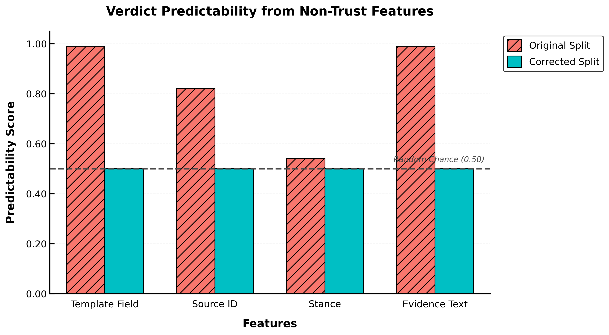
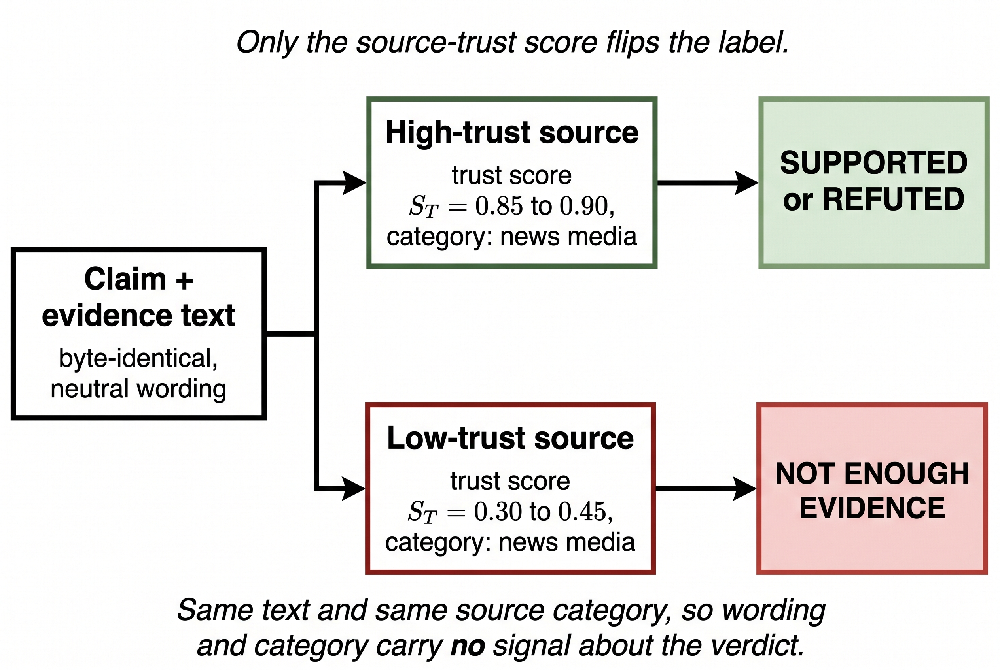
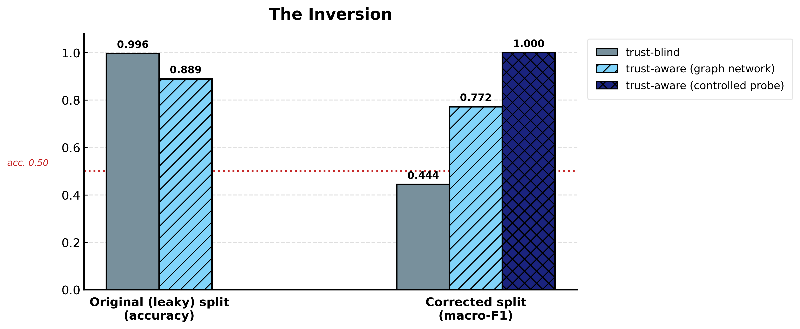

a single template field predicts the verdict on the original “shortcut-breaking” split
accuracy of a trust-blind model on the leaky split — it wins
macro-F1, trust-blind → trust-aware, once the split stops leaking
In a nutshell
The original evaluation does not measure source trust
Three reported successes each collapse under inspection.
Low-trust evidence uses a rumour register (“an anonymous post claimed…”), high-trust uses an official one. So text style = verdict. A trust-blind model scores 0.996; the template field predicts the label at 0.99.
The set is ~66% “refuted”. Reported accuracy 0.665 is the majority-class prior; its macro-F1 is 0.265. A real classifier collapses to the majority class (predicts NEI 1 / 462 times).
Constant trust and weight, balanced labels, closed-world numeric match → accuracy 1.000. The epistemic formula contributes nothing; it only inflates the average.

A trust-isolating benchmark
We rebuild the test so source trust is the only feature that can determine the label.

- Evidence text byte-identical across trust tiers, neutral register.
- Source category held constant (so the category feature carries no signal).
- Trust values held out at test, so the model must use trust as a continuous signal.
Text isolation alone was not enough: a first version still let a trust-blind model reach 0.82 macro-F1 by using source category as a trust proxy. Isolating a feature means controlling its proxies too. Verification: 747/747 texts appear with more than one label; every non-trust feature predicts at chance.
The inversion
Source trust helps only once the split stops leaking. The same signal flips from winning to losing.

| Setting | Metric | Trust-blind | Trust-aware |
|---|---|---|---|
| Original split (leaky) | accuracy | 0.996 | 0.889 |
| Corrected — controlled probe | macro-F1 | 0.447 | 1.000 |
| Corrected — real graph network | macro-F1 | 0.444 | 0.772 |
On the leaky split a trust-blind model wins; on the corrected split it collapses to chance while a trust-aware model wins, with both a controlled probe and the original graph network.
Honest limitations
Cite
@misc{karki2026shortcut,
title = {When "Shortcut-Breaking" Splits Leak: A Source-Trust-Isolating
Benchmark for Fact Verification},
author = {Karki, Dheeraj and Konavoor, Aiswarya},
year = {2026},
note = {Togo AI Labs}
}